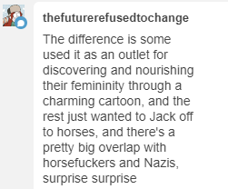

I just ran into your post from last February about evangelizing for theater LARP. Is that still a thing you're doing? If so, I'm interested in being evangelized at; I've been vaguely-interested-from-a-distance in LARP for a while, but have always felt too intimidated (in an "I'll probably be bad at it and drag the overall group's enjoyment down" sort of way) to actually try it out.
Yes, it’s a thing I’m still doing.
I’m not sure what to say to “I’m intimidated, I’ll be bad at it” other than “don’t be, you probably won’t.” People come into the hobby from all sorts of backgrounds with all sorts of beliefs about their acting / roleplaying / improv abilities, and an awful lot of them turn out to be really excellent players who adorn every game they’re in, and those aren’t always the one’s you’d expect or who expect it themselves.
The following statements, all of which are true, may be of some comfort:
* Everyone knows what it’s like to roleplay with a newbie. In a good cast, people will not only be tolerant of your awkward beginner fumblingness, to the extent that you have any; they’ll go out of their way to engage with you and create roleplay opportunities that can (a) be really cool in their own right, and (b) help you raise your comfort level and develop your skills.
* A halfway-decent theater LARP will be written such that one mediocre or timid player won’t ruin anyone’s fun.
* A good theater LARP will be written such that, if you read your materials and pay attention to your character’s incentives, you will be carried along into and through scenes of dramatic quality – even if you’re mediocre or timid. A lot of auctorial skill in this medium comes down to “writing games where the players don’t have to be master actors to create something worthwhile,” and the best theater LARP authors take that challenge very seriously.
Beyond that…all I have to say is that the stories you can find in these games are likely to be a lot more thoughtful, and less cliche, than the average person would expect.
If you’re anywhere within the NY metro area, get in touch with me directly, and I’ll help get you involved with some good games filled with good people. If you’re anywhere in the Northeast, tell me where you are, and I can at least point you towards some community that’s likely to be able to help you out.
And, of course, if you have further questions or thoughts, I’d be glad to field them.
[I’m answering this publicly because I imagine that this stuff might be of interest to other potential LARPers.]
Something I’m not 100% sure how to put into words b/c flu but nonetheless woke up thinking about is:
it’s so disappointing when fiction that purports to show the “villain’s side of the story” actually just flips the roles, making the original villain a precious cinnamon roll and the original hero 100% garbage. it’s such a lazy narrative and it makes me wonder if you’ve really thought about *why* you want to tell the story you’re telling.
and like – there’s nothing *wrong* with just writing a power fantasy wherein your villainous fave comes out on top. but it’s always kind of unnerving to me when fandom will jump on those narratives without fully thinking them through, and thus react just as vitriolically to the new villain as an older audience did to the old one.
Maleficent has this problem, Orange Is the New Black has this problem, The Shape of Water to some degree has this problem (though concentrated in the fandom and not necessarily in del Toro’s narrative). it’s really bizarre to me how people will walk into a “villain redeemed” narrative and come out with their hatred intact, just shifted to a new, more “deserving” target. like, do you not see how recursive that is? and are you not just a little bit troubled by the knowledge that your sympathies are that easy to manipulate by a shift in narrator?
again, it’s fine if it’s just a power fantasy, but if you’re trying to make any kind of overarching point about villains and narratives and redemption, it’s at least *prudent* not to just switch the vantage points.
Yeeeaaaaaaaaah…
Part of the problem is: villain fandom is a big-tent coalition. It contains a lot of different groups of people, who are there for very different reasons. Sometimes for directly-opposed reasons. But our vocabulary for distinguishing those groups from each other isn’t very good, they overlap in all sorts of complicated ways, and various people are actively interested in eliding the differences in the name of cementing cultural alliances (or in the name of motte-and-baileying). So when you produce works to appeal to one of those groups, or to advance its cultural agenda, you’re likely to be attacking some of the others.
Some people are into villains because they genuinely see themselves as partaking in Darkness and Badness, whatever those things mean to them. They’re interested in exploring how you live with that, how you make something worthwhile out of your life despite its being inescapably Dark and Bad, and how other “purer” people should engage with you under those circumstances.
And some people are into villains because they believe themselves to be Pure Cinnamon Rolls who are unfairly stigmatized, marginalized, and abominated by the world’s ruling class of self-designated “heroes.” As far as they’re concerned, the Darkness and Badness aren’t real, they’re just cultural attacks from a dominant enemy tribe. So they’re interested in aggressively proud trope-reclaiming stories that say, “nuh-uh, the people who wear the villain hats are the true good guys after all, and in fact you should associate the bright-and-noble stylings of the ‘heroes’ with the true Darkness and Badness.” This is basically just a stronger, slightly-differently-focused version of the more-common narrative lens where “disreputable thief” instantly codes as “good guy” and “justice-oriented cop” codes as “bad guy.”
[And some people are there to fantasize about redeeming the smolderingly sexy bad boy in leather pants. And some people are edgelords who think that black-and-red is a really cool look. And some people are psychopathic sadists who want to be applauded rather than scorned for their interest in hurting people. Like I said, it’s a big tent.]
In my experience, mainstream villainfic that’s intended to be sympathetic will almost always go the Cinnamon Roll route. “The guys in black are actually just misunderstood while the guys in white-and-gold are actually racist thugs!” is a much simpler and more-accessible sort of message than “the monster is truly monstrous but nonetheless deserving of love and understanding.”
Is there some reason that the weird Boschian gross-out horror aesthetic has become so popular with miniatures games on Kickstarter of late? Is it just the inexplicable success of Kingdom Death?
Viral horror game that initially appears to be a dating sim, but ultimately turns out to be a discourse sim instead, as your romance options gradually become less interested in you and more interested in narcissism-of-small-differences ideological arguments with each other.
Helplessly, the harem protagonist fails to bring the Ordinary High School Girls back to normal over whether social democracy, welfare capitalism, or democratic socialism were ultimately responsible for GamerGate, due to his complete lack of a personality. Ideological arguments slide into personal drama, sabotage and reprisals. Each seemingly reasonable response he makes only spirals the situation farther out of control.
Each playthrough is somewhat unique due to randomization of various data and additional dialogues. Youtubers attempt to get a high score by surviving the longest.
No, see, theanon’s suggested game but unironically. Or something like it, anyway.
It is good to have media through which The Discourse can be advanced in a sane, charitable, multipolar way. It is good to have some methodology by which a wide variety of different ideological positions can be introduced to people, and critiqued and defended, in way that will foster engagement rather than immediate tribal shunning.
And there are certain populations for whom it has been established that, if you want to introduce them to anything, “have the objects of your discussion take the form of cute anime waifus” is a pretty good starting place.
…it is possible that various of my LARPs amount to, more or less, this.
(It’s OK, gamer-kun. Someday, Liberal Technocracy-sempai will notice you…)
@theunitofcaring reminded me to talk about this, but - I am *simultaneously* a person who finds regular employment soul-crushing and a person who cannot live without work/accomplishment. And from where I’m standing, a lot of the ‘is work good for people’ Discourse is just plain nonsensical.
Bad ‘is work virtuous’ Discourse assumes there’s two categories of activity: “work” and “not-work”. ‘Work’ covers everything that one could, theoretically, be gainfully employed to do- as long as it’s not also something one wants to do. If that gainful employment is something that most people find fun or rewarding, it doesn’t ‘count’, even if it’s made you a millionaire. Anything else- no matter how worthwhile, and no matter how onerous- is ‘not-work’.
This Bad Discourse then expects you to take one of two stances:
“work - meaning ‘onerous things that one could earn money doing’ - is inherently good for you, because the alternative is Idleness, which is Bad For The Soul.”
“work-
again, meaning ‘onerous things that one could earn money doing’- is inherently Bad For The Soul, and most people would be happier doing nothing than working a minimum-wage job.”
The trouble is, the Bad Discourse conflates three things: your urge to accomplish things, your capability to accomplish things, and your sense of what is and is not accomplishment. These things do not necessarily correlate. Furthermore, they do not necessarily match your society’s ideal.
Let’s step back and look at two hypothetical examples for a minute.
Bjorn lives in a society of cartoonish barbarians that spend most of their time looting and plundering. Bjorn is missing a leg, and furthermore, Bjorn doesn’t like raiding and plundering. Bjorn would rather spend his time double-checking the tribes’ stores, carving runestones, and learning how to tie new and exciting kinds of knot. The other cartoon barbarians in Bjorn’s tribe think he is lazy and a coward, because he does not want to go out to raid and plunder. Despite this, Bjorn is happy with his life; he finishes a runestone or learns how to tie a new kind of knot every so often. Thus far, that’s enough for him.
Wendell is an accountant from a world very much like our own. He works at a high-powered financial firm and spends most of his time handling very important people’s very important money. While he got his job through family connections, he’s still very good at it; he seems like a very successful person. But Wendell doesn’t feel like he’s accomplishing anything at all at his job; it seems like a treadmill. He only really feels alive on the rare weekends he can snag a day for himself to go hunting or go to the shooting range. Despite this, he keeps taking more responsibility at work, because he wants to accomplish things. Thus far, it hasn’t made him feel any better.
Neither Bjorn nor Wendell is a lazy bum who doesn’t want to work. Both of them would, if they had their ‘druthers, be doing something that’s at least moderately useful. Further, both of them would be accomplishing something– at least by their own standards.
But Bjorn can be happy, even though he’s a failure by his society’s lights, because he’s still accomplishing things he wants to. In contrast, Wendell is unhappy, even though he’s very successful, because he’s not able to accomplish what he wants to.
And the real kicker is that under the right circumstances- say, putting Bjorn in Wendell’s shoes, or Wendell in Bjorn’s- both of them could be happy and outwardly successful; it’s just that neither of them are ever likely to be in those circumstances.
If you say “is work good for people” and your definition of ‘work’ is ‘being a barbarian raider’, work is bad for Bjorn, but good for Wendell. If you say ‘is work good for people’ and your definition of ‘work’ is ‘being an accountant’, work is good for Bjorn and bad for Wendell.
If you say ‘is work good for people’ and your definition of ‘work’ is ‘dealing with dangerous machinery while being screamed at by abusive angry customers for seven hours on end with no break’, work isn’t good for anyone. And if you say ‘is work good for people’ and your definition of ‘work’ is ‘anything more worthwhile than watching paint dry’, work is good for everyone.
It is bad for people to not be able to accomplish as much as they want to. It is bad for people to be under pressure to accomplish more than they can. And it’s bad for people not to be able to decide what accomplishment means for their own damn selves and act accordingly. Trying to shove all of these variables into a little box, and then passing judgement on its contents without the context… it’s illogical. It’s asinine. It’s insane troll logic.
Without context, it’s better to err on the side of ‘let people do what they want’. And most people do not want to be constantly abused and do not want to do hard manual labour until it breaks their bodies, just sayin’.
It is bad for people to not be able to accomplish as much as they want
to. It is bad for people to be under pressure to accomplish more than they can. And it’s bad for people not to be able to decide what accomplishment means for their own damn selves and act accordingly.
This is true but should be complicated. I realize that I’m kind of derailing the conversation here, and overreacting to a relatively minor aspect of the argument, but this is something I find important.
I think a lot of us find it intuitive to act like the self is this totally coherent self-contained entity with discoverable, largely-unchangeable preferences. You meditate on your own emotions for a while, maybe you bum around trying out a few different things, and – voila! you know what works for you, and you should go pursue it.
This is mostly not how people work. People are embedded in culture, and culture tells them what to value. This works through a thousand different conditioning vectors, everything from “my parents buy me ice cream and stop fighting when I get good grades” to “at school I watch people being mocked and humiliated for liking babyish TV” to “I read this one book where the main character was a super awesome wizard and I really identified with him, so now I get a little twinge of joy whenever I do something that makes me feel like I’m living up to his example.”
You can’t control all the ways that culture changes people, not even close. Events like “a child identifies with one character in a random book” are too small-scale for any engineer to account for them, and they happen a billion times every day. But on the macro scale, there are things you can control. You can cheerlead for some values and work to quash others. You can guide people onto specific paths that provide particular kinds of rewards, and away from other paths that produce different rewards.
And you should.
Because if you don’t, someone else will. There is no state of total uninfluenced freedom, not for anyone. Culture happens. If it’s not managed by competent culture engineers, it will come to be ruled by the sort of people who are most naturally inclined to take over social dynamics. This is generally a disaster.
Also because pursuing satisfaction is genuinely very hard a lot of the time, even for smart well-meaning people, and left to their own devices they often flounder.
Soooo…
“decide what accomplishment means for their own damn selves”
In the sense that they should be able to opt out of any authority’s cultural regime, and pursue their own idiosyncratic preferences, if they independently find reason to do so? Yes. Absolutely. One of the most important markers of a good society is that it’s able to take care of its misfits and oddballs rather than crushing them.
But you hear this kind of thing a lot, and it often gets translated as “don’t push messages about the nature of the Good Life, don’t act like you might know what’s good for people better than they do.” Which is a terrible idea. The world should be filled with more good messages about the nature of the Good Life, and it’s quite possible that you do know what’s good for people better than they do.
“If $THING were actually bad for people, they wouldn’t do it!” is a really terrible argument.
Our psychology was not engineered to optimize our well-being. (That’s not how evolution works, and even if it were, we evolved for a very different environment than the one in which we live.) We are drawn to diets that kill us. We are drawn to gambles that are negative-expected-value. And, yes, we are drawn to lifestyles and social structures that make us miserable, because human brains systematically overweight certain kinds of inputs and underweight others. This is predictable. This happens literally all the time, everywhere, with everyone.
…look. Paternalism-versus-libertarianism is a complicated meta-debate. Honestly, I come down on the libertarian side the vast majority of the time, for most concrete social-policy purposes; because there’s so much variation between people, I’d rather let them pursue their own idiosyncratic forms of welfare than force them to accept a best-for-the-average-bear solution. When I do support paternalistic solutions, I tend to be adamant about giving them escape hatches.
But if someone is saying “People doing X to themselves is a problem that we are actually seeing in the world,” and you’re saying “How could that ever be a problem? Why would anyone ever do such a thing?” – you are probably the one making a mistake.
it turns out that the shinto concept of ‘kami’ – the universal sacred essence that infuses all things – is perfect for a thing in my worldbuilding that’s crucial to the plot. but i can’t gank it because english speakers are used to reading ‘kami’ as an individual god or spirit, not spirit-in-general.
i don’t want to invent vocab, i try to avoid doing that except when inventing entire languages. i don’t like to do that ‘call a rabbit a smeert’ trope.
but i’m sure as hell not gonna call it The Force.
any ideas on a vocab item for discussing The Thing What Makes The Grass Grow?
Numen.
ETA: Okay, so numen isn’t (usually) universal, so that’s not quite right, but it’s at least pointing in the right direction.
“Chi.” “Quintessence.” (Or just “Essence.”) “Orgone.”
OK, book, you’ve missed one obvious recommendation after another. I guess I have to forgive that – you’re a work of normie pop science being written for a normie audience, ultimately addressed to normie policy-makers, and so you’re not going to go into anything super weird even if it might help with the problems that you’re bemoaning. I get that.
But, seriously, some things are just too obvious and too mission-critical to pass up.
Maybe someone should start thinking about promulgating ideals of the happy, fulfilling, worthwhile good life that don’t involve having kids.
If you can’t make money from the poor, why is Walmart the biggest
company? Maybe the global poor aren’t a profitable group to cater to,
but the American poor seem to be a more profitable group than the
American rich, by many standards.
Ha. No. And the Wal-Mart example actually does a really good job of illustrating why.
Wal-Mart is indeed very profitable. Wal-Mart, notably, is one company. There are huge swathes of the country where this one company basically has a monopoly on the “providing any goods of any kind” market. It maintains this de facto monopoly by ruthlessly undercutting and underpricing all manner of competitors, which is a thing that it can do because it maintains a mind-bogglingly huge and intricate global supply system. It has razor-thin margins that it makes up for in volume. It charges rock-bottom prices, and pays its workers as little as the law allows while finding ever more ways to wring more labor out of them.
If there were as few as two companies trying to be Wal-Mart, both of them would fail. If Wal-Mart were any less clever or any less hard-nosed in its business practices, it would fail.
And once you get past Wal-Mart, in the “providing goods to poor Americans” sector, you get…well, it’s a very big field and there’s some amount of diversity, but honestly most of what you see is shitty and unpromising from a business standpoint.
Let’s compare with the sorts of people who sell goods and services to rich people.
I was one of those people, once. I hung out my shingle and helped the children of the wealthy prepare for standardized tests (SAT/GRE/LSAT), in a private and entrepreneurial sort of way. I made ridiculous bank. I think back to the amount of money I got for an hour of work, back in my tutor days, and I kind of want to cry.
And…as it happened, I was a pretty damn good tutor, and I did a lot to help many of my clients. But their rich parents didn’t actually have any way to know that. My value-add was entirely swallowed up, from the perspective of an outside observer, by the unknowable disparities in the students’ starting capabilities –
– which makes it sound like my clients’ parents were actually even looking at my performance data, which, pfffft, not even a little bit, not once.
On those rare occasions when I was completely useless…when I couldn’t find a teaching method that would actually work for the client, and I didn’t improve his score at all…this had zero impact on anyone’s satisfaction with my work, or on my reputation, or anything. Those clients were just as happy with me as all the others.
I was, essentially, a magic totem. I was hired because, if you don’t get a tutor – an expensive tutor, the classy kind with fancy credentials – you’re not Doing All You Can For Your Kid. Once you’ve performed the ritual, well, it all comes down to unknowable luck and happenstance, right?
You can offer this kind of Comforting Ritual racket in poor communities, reading tarot cards and the like, and you make peanuts. If you do the same thing in rich communities, you make $WayTooMuch/hour. There is a firehose of money that goes from rich people to their kids’ college educations, and if you manage to situate yourself anywhere near that blast, you’ll be showered in wealth. It really doesn’t matter how much you’re actually contributing to anyone’s welfare. No one’s checking; it’s a ton of work to check. The rich folk know that the Thing matters, and that a ton of money is supposed to get spent, and the details basically sort themselves out however.
That’s just one example; I’m sure you can think of many more. Think of all the ridiculous artists, gurus, and consultants who survive off of rich people’s willingness to waste large amounts of money. It’s an entire ecosystem, a viable one, because rich people have large amounts of money to waste.
Poor people don’t. If you want to get their money, you have to provide value, and you have to do it very very very well, and you have to cut every conceivable corner.
UBI will be disastrous if implemented. Long-term idleness, which is what UBI enables, the explicit reason that UBI exists, is disastrous to the human spirit, and it will inevitable reduce a large fraction of the population to a near sub-human existence.
My preferred solution to the problem (if it is a problem) is a guaranteed jobs program.
I am somewhat inclined to agree with the second sentence, not quite as much with the first. I have a fair amount of hope for such a project, just not very much optimism.
(FALC and UBI-plus-heavy-automation combination worries me much more)
What about a guaranteed capital program? Jobs mitigate some of the long-term idleness issues but hardly attack the source.
Makework feels to me like it might not be that much better than idleness, in that it teaches you, at least on a system-1 level, that work isn’t something that’s *really necessary*, and that it’s just a pointless obligation imposed by authority figures.
Seconded, and maybe it doesn’t even go far enough. Make-work is awful. I can’t overemphasize how much resentment is generated when you’re forced to bust your ass for work that you know for a fact has no point. And to be honest, since a lot of labor in our current economy, even for the employed, is bullshit make-work and the malaise is already obvious, I’m confused as to how someone could think it’s the solution.
At least in idleness you could be playing video games. (I’ve seen the hypothesis floating around that, in utter seriousness, video games are the other half of the UBI puzzle. I don’t know if I believe it, but it’s a delightfully subversive take.)
“idleness” can also involve creating works of beauty that might not be financially sustainable in the current economic environment.
think of all the scientific discoveries and works of art and literature created by aristocrats who were technically “idle”, coasting on inherited wealth.
sure, some people may choose to spend their lives cock fighting or whatever instead, but so what.
“Idleness” can involve creating works of beauty, but honestly argumate, how many people would do that? “Somebody could paint the Mona Lisa in their UBI time” is not a serious argument, because only a tiny, tiny fraction of the population has the inclination and the skills to do that.
The people who already live entirely on gov’t support, what do they do? Does it look like “scientific discovery and works of art and literature”? Do you want to dramatically expand the number of people living under those conditions?
I appreciate this concern, tho I don’t myself care about it beyond practical considerations, but I’d expect that an analogy to the people on government support that you have in mind would be misleading because those are people who are economically useless in an environment where most of the population isn’t. There is a really strong selection effect at work there.
yeah, i think enough people are natural aristocrat types stuck plowing most of their waking hours into if not grunt shit then at least like, making pages load a few milliseconds faster, that the benefit of UBI from freeing up their time would dramatically outweigh the costs of subsidizing orcs
That would just result in an increased orc tax that makes natural aristocracy harder to attain though.
I think “natural aristocracy” as it’s being used here (whatever exactly it’s meant to mean) is probably pretty rare and also that people possessing it aren’t likely to get stuck optimizing unimportant websites or w/e for long, it’s not exactly difficult to bootstrap your way out of that sort thing once you’ve got there if you’re not interested (I won’t comment on how hard it is to bootstrap yourself in to that point, though, I don’t really get to see that part personally)
OK, we should actually hash this out, because I suspect the term is getting interpreted in several different ways, some of which are severely incompatible.
I have been translating “natural aristocrat” as: a person who, given resources and social status that free him from the need to labor for anyone else, will employ that leisure in a worthwhile and beneficial way.
“Worthwhile and beneficial” requires further translation, of course, and the meaning hinges on the speaker’s value system. There are probably people who are happy to hand the “natural aristocrat” title to anyone who can successfully live a life of leisure without spiraling into dysfunction or despair, including to those who would cheerfully spend their time in traditional stupid pointless aristocratic pastimes like foxhunting, providing worth and benefit only to themselves. Others, more selective, will limit the natural aristocracy to those who have the internal drive to do things that are “genuinely useful for the world” – creating art, putting your code up on GitHub, etc.
The relevant point is really just “we can give these particular people free money and be confident that the outcome will please us.”
Both the libertarians and the socialists have a point when they accuse each other’s favored economic systems of catering largely to fake demand.
A government acquires its wealth through coercion and spends it according to the logic of internal politics, which is often insane, and which often has nothing to do with doing any real good for anyone. See, e.g., absurd bloated procurement contracts for jet fighters that the military won’t actually use. Or, to go slightly farther afield, @slatestarscratchpad‘s pointless extra years of required training for doctors (which is feasible because medical schools have a government-backed guild monopoly on doctoring jobs). This kind of distortion would not occur in a truly free market!
…but in a truly free market, vast swathes of the economy would be devoted to helping the stupendously rich compete in zero-sum status games against each other, or (at best) to helping them to gain trivial increases in personal welfare at staggering cost. It’s more profitable to build gold-plated yachts than to feed the poor, since the poor don’t have any money. But a sane civilization is not going to dedicate lots of resources to meeting the demand for gold-plated yachts, because from a dictator’s-eye standpoint that demand basically isn’t real, it’s a psychological triviality that happens to be backed with absurd resources.
I am honestly not sure how you navigate this Scylla-and-Charybdis setup in a world of severely limited resources. The best I’ve got is pretty much the same as the local conventional wisdom: “a largely unregulated market with colossal jackboot-enforced levels of wealth redistribution.” But, at the very least, I always get a bit antsy when I find myself agreeing with the conventional wisdom.
Hey, saw your voter ID law and wanted to ask about voting. After the election of Trump and the precedent he's established for celebrities to run I was wondering how we can tackle general historical ignorance and ensure a participatory electorate. This may be extreme but what about requiring ppl to take the civics test if they want to vote? Unlike voter ID laws it wouldn't need to cost anything as all the resources are online, it's an easy test, & only reqs basic history knowledge. Thoughts?
Stupid people have a right to vote. It is the job of smart people to educate them.
Civics tests are wholly the wrong answer. We need an educating system that promotes critical thinking, analysis, and independent thought instead of obedience and repitition.
“Trump established the precident of celebrities running for president” anon says, while trying to keep stupid people who don’t know about their own government from voting. *Facepalm*
Seriously kids, look up what Ronald Regan was up to before he became president.
This isn’t fair.
Reagan was indeed a celebrity – and he generated plenty of “good God, how could we possibly respect ourselves if we let this Hollywood bozo be president?” pearl-clutching – but he was also the governor of California. And, indeed, before starting his electoral career he went on a long speech-giving tour around the country, specifically for the purpose of leveling up in politics and connecting with voters on political issues.
We’ve gone through many iterations of “how low can our standards go?” But Trump does in fact represent fact a new and significant point on that spectrum, in that he was a celebrity with literally no political credentials whatsoever, running on the sheer strength of his media presence.
Interesting, but you REALLY need to at least gesture towards the habits of the idle rich and regular retirees when considering what people might get up to under a lack of material demands that they work.
So, travel, extreme sports, cooking for fun, gardening (also for fun, often hobby gardening of non edible plants, up to low key plant breeding), bird watching, going to museums, going to concerts, skiing, boating, going on safari, hunting (deer or big game), fashion and being fashionable as a freaking hobby, eating neat food, going back to college for fun…
Oh, and side note of no real material import: cooking is absolutely a kind of performance, fulfilled by being eaten by an appreciative consumer, ideally one that can fully appreciate what has been done. I’ve seen professional chefs cooking for each other and it’s a trip: people showing off knife work and techniques and little tricks and pulling stuff out that the general public doesn’t appreciate.
That aside, my inclination is that in “heaven” under no material constraints, various activity programs ought to be offered, but not be obligatory, although probably there will be mother hen types who enjoy dropping in on people for essentially wellness checks and social services type stuff to make sure that they’re doing ok even though they haven’t been to any events or activities lately.
…I mostly agree with all of this, as far as it goes. And to the extent that the answer to the Problem of Idleness is “turns out our welfare beneficiaries will act like idle upper-middle-class retirees do now,” well, that’s dandy and I don’t think too many people have a serious problem with that outcome.
Obvious objections to this scenario include:
* A full-time lifestyle of international travel and extreme sports and gourmet food is very expensive; it is very easy to imagine landing in a place where we can pay people not to work but we can’t pay them that much, at least for a good long while.
* The upper classes do not constitute a representative sample of humanity; other groups of people are likely to have different values and different temperaments. Giving a rich person’s worth of money to a poor person probably won’t result in the poor person suddenly “acting rich.” And, indeed, you do see this to some extent with lottery winners etc.
* Maaaaaaaaybe the voracious experiential consumerism of the idle upper classes isn’t actually as totally-fulfilling as we might hope.
So it’s worth thinking about answers to those issues. And if they’re not needed, then hooray, they’re not needed.
are you trying to avoid mai la dreapta or did you just not want to tag him
Not trying to avoid anyone. I generally make a policy of starting new threads rather than hijacking existing ones with giant rambles, and I wasn’t addressing him directly enough for tagging to seem natural. But I’m certainly not averse to his attention.
I have seen a lot of talk lately about work, idleness, UBI, jobs programs, and the like.
I really need to write a for-serious essay about this stuff. But for now, my thoughts aren’t quite that organized, so have a rambling Tumblr post.
From a broad-scale social perspective, the actual terminal goal is to set up a situation where people are spending their time doing the activities that cause them to flourish.
…and the secondary operational goal is to ensure that the grunt work of civilization, which we require someone to be doing so that we can enjoy an acceptably high standard of living, gets done. For so long as we need it, anyway. If God is good, then soon enough FAL-something will come in and save us all from drudgery by allowing us to hand it off to robots.
(You can probably learn a lot about someone by finding out what word he thinks should optimally complete the phrase “Fully Automated Luxury _____.” My own suggestion would be Aristocracy.)
If those aren’t your goals, then – as far as I’m concerned, you’d better have a really good argument for the goals you do have.
A point that I consider really obvious and important, but which gets very little air.
There should be a strong presumption that any paid work you can get is not going to be an optimal use of your time, from the standpoint of your own spiritual well-being.
I mean, why would it be? Your employer is paying you to do things that are good for him, not for you. Maybe you’re lucky, and you’ve found someone who’ll pay you to work in a field that you love, a field where you want to be working in order to be the person you want to be…but even then, if you were truly the master of your time, would you be doing exactly that work? Would you be doing it exactly that way? Wouldn’t it be better to use your own preferences and ambitions as the goalposts?
In Heaven, scholars can study whatever matters most to them, not whatever gets grants or makes their resumes look shiny. In Heaven, artists don’t bow to the whims of patrons or audiences – or maybe they do, if they see themselves as entertainers / service-providers, but at the very least they can seek out their own favorite patrons and audiences rather than catering to the rich ones. In Heaven, chefs cook whatever the spirit moves them to cook.
This get-paid-for-fulfilling-someone-else’s-demands model is a temporary arrangement that we’re using until we can set up something better. At least, I sincerely hope it is.
Let’s be real. Given financial freedom, most people are not suddenly going to become passionate amateur artists and scholars.
…this is in fact true. Not quite as true as you might think, if you’re the sort of person who sneers at the idea – there are an awful lot of fanfiction writers and fanartists in the world, and there would probably be a lot more if we gave them the least cultural encouragement – but it’s basically true. You need some pretty hefty intellectual or creative talents to be happy spending your time doing intellectual or creative work, and not everyone has those.
So OK. In Heaven, what would all those non-creative non-intellectual people be doing? What would cause them to flourish? What kind of lives would we try to arrange for them, if we were optimizing for their well-being rather than for anything else?
I’m no social psychologist, and I imagine that my readers will be able to add to this list in all sorts of ways, but a few obvious suggestions off the top of my head:
* They would spend lots of time consuming, and appreciating, really good art / entertainment.
* They would spend lots of time in social communion with friends and acquaintances.
* They would spend lots of time exercising (which I gather is good both for endorphin-related reasons and for feeling-like-you-are-physically-powerful reasons, not that I would personally know).
* They would participate in competitions that mattered to them (games? sports? politics? status struggles on the Internet?), and spend lots of time preparing for such competitions.
* They would spend lots of quality time with their families, attending to the people they love.
* …they would spend lots of time out in nature? Maybe that’s a thing?
* They would perform tasks that made them feel useful and valuable to people about whom they cared.
With the exception of the last entry, the one in bold, these things all seem like they’re easy to offer very cheaply. We’ll get to that one in a bit. But otherwise…it doesn’t actually seem very hard, or very expensive, to set someone up in a pretty happy existence even if he’s not participating in the economy at all.
Idleness is bad. People who are able to be idle, in our lived experience of welfare systems, mostly don’t do any of those nice-sounding things you’re suggesting. Mostly they laze around and grow depressed, and occasionally beat their girlfriends or join gangs or do something else that’s very undesirable.
In fairness, yes.
The glib answer is: “Yeah, well, maybe if we didn’t dedicate our entire culture to spitting on those people and making them feel like worthless losers, they might be a little less resentfully glum and a little more inclined to live up to the social standards that would make themselves much happier and better-off in the long run.”
…and it continues: “And maybe if we didn’t tell them that they’re not allowed to work if they want to continue to receive the only financial stability we’re willing to offer, they might do more in the way of experimenting with work.”
The less glib answer is: “Yeah, it turns out that it’s actually pretty hard to teach people how to live their best lives. This is a really important project. It is for precisely this reason that it’s good and useful to have culture, and the total anarchic liberalization of culture is a bad plan. But let’s go with ‘figure out how to teach people how to love their best lives,’ even if that’s difficult, and not settle for ‘force people to do random probably-pointless probably-degrading work and hope that it’s a good enough substitute for flourishing.’“
As intimated above, many people actually do benefit strongly from traditional-type work of certain kinds.
Let’s be honest, though, the kind of work that is best for average people is mostly not the kind of work that is economically viable at the moment. And that’s been true for, like, a century.
You want to feel competent and masterful in your domain. You want to feel like you’re working for the benefit of someone about whom you care, who will be grateful for the effort.
…those much-lauded manufacturing jobs of the mid-twentieth-century were soul-killers.
Doing something that’s urgently needed does help (cf. agriculture in a subsistence-farming society), but we don’t want this work to be urgently needed by anyone, that’s holding the rest of civilization hostage to the desire for people to be employed.
Given that, the best general-purpose model for rewarding employment that I can think of is domestic service.
Domestic tasks are simple and accessible. When they’re done, you can see what you’ve accomplished, and feel good about it. There will always be a desire for them, even if not necessarily a need as such. Most importantly: you can have a relationship with a singular boss who understands and values your contribution. You can develop all sorts of skills as an outgrowth of “being a useful personal asset to your boss*,” and take additional pleasure in that, so long as no one is trying to be super-economically-efficient about it.
* like bodyguarding!
This kind of service arrangement would actually be really beneficial for a lot of people, to some extent for the “employers” but especially for the “servants.” And I don’t mean that in a contemporary-class-driven kind of way. I went to Big Fancyname University, most of my friends are rich creative-class types, and I’m pretty sure that like half of them could live quite happily as someone’s handmaiden or butler. Perhaps more happily than they do now.
But of course this can’t work so long as you’re telling the servants that they’re low-achieving scum for being servants. Which comes back around to the culture-engineering stuff. Really, “let people take pride in the things they can actually do” will get you a lot of the way there.
There’s more, but I’m running out of steam. Perhaps later.
Your classification of worldbuilding and worldburning does seem useful. But I'd note - sometimes worldburning can be useful. "The queen is the prettiest in the land" would also be somewhat world-burning, but also establishes some personal stakes for her later in the story.
It’s not world-burning unless knowing that conveys the information that all the other people in said land aren’t worth caring about. If it was like Dragon Ball Z, only instead of “power level” it was “prettiness” and only people with high prettiness could possibly be relevant or possibly do things, then declaring a queen the prettiest in the land could be world-burning, or part of it.
The relevant point, I think, is that not all narrative forms benefit from worldbuilding (in the sense you’re using the term); you don’t always want your setting to feel like a “real place” full of vibrant details that will come to life if you go explore them.
Fairy tales make for a really good example, actually. A lot of fairy tales fall apart, or at least fail to work properly on an emotional / connotative level, if you start asking questions like “why didn’t the wicked queen’s terrible policies result in her lands getting invaded by a miffed trading partner?” or “why didn’t the handsome lad just go find some other pretty girl to pursue?” It’s actually really useful to be able to communicate a sense of “no, seriously, these are the only people in the entire world who matter.” The queen is the fairest woman in all the realm is a very pithy way of saying “this is a story that is partly about the dynamics and relevance of beauty, and you should be focused entirely on her and on anyone who gets similarly anointed by the plot gods.”
For a somewhat-more-modern take on the same mechanism, look at Revolutionary Girl Utena, which very effectively – albeit, uh, nonsensically in a magically-realistic sort of way – uses metaphysics to say “nothing outside this high school can possibly have any relevance” precisely for the sake of establishing “…and therefore the random psychological problems of these high school students have World-Shaking Significance.”
Not what you want in Star Wars, though, to be sure.
So. In (straight) marriages / serious long-term relationships where the woman is the breadwinner, we supposedly have this serious problem with male ego. Men feel emasculated by their failure to play a credibly masculine role in the dynamic; they can contribute in all the ways that their womenfolk used to, by doing housework and childcare and suchlike, but (a) they often hate it, and (b) a lot of the women actually hate it too. The “house husband” role is widely understood to be mediocre.
How much mileage could we get out of reclassifying these guys as their wives’ bodyguards?
I mean, on some level it’s patently ridiculous. Your average woman-with-a-decent-job does not actually need a bodyguard. But then, let’s be honest, right now your average household does not need a full-time angel-in-the-home either.
A large part of the wife’s role in a traditional marriage is to be an ornament. Men can’t really be ornaments by showing off how sexy and desirable they are; we don’t have a cultural vocabulary that allows for it. But they could theoreticallyshow off how fierce and protective they are, in a way that seems likely to have ornamental value both to their wives and to outsiders.
There was once a woman who built her house upon the sand, acting against the wise counsel of her elders. The rains came down and the flood came up, and the house went tumbling down into the water with her within it, and she soon drowned.
*****
There was once a woman who built her house upon the sand, acting against the wise counsel of her elders. And while she was away on a long trip, the rains came down and the flood came up, and she returned to find the house gone, and her fortune with it, and they say she never had another home of her own again.
*****
There was once a woman who built a house upon the sand, acting against the wise counsel of her elders; and, being wealthy, she built it beautifully, beyond the dreams of architecture. And while she was away on a long trip, the rains came down and the flood came up, and she returned to find the house gone. But the better part of her fortune remained to her, and her friends at once urged her to build a grander home upon the rock, and forget her youthful folly.
*****
There was once a woman who built her house upon the sand, for she had been raised inland, far from the sea, and her elders had not known to counsel her otherwise. And while she was away on a long trip, the rains came down and the flood came up, and she returned to find the house gone, and her fortune with it. So she returned to the houses of her elders, who dwelt inland, and they found a place for her in the home of her cousin, where she lived for the rest of her days.
*****
There was once a woman who yearned to build her house upon the sand, but whose elders had counseled her against it. And so she went away and studied, and in time she returned and built a house on stilts upon the very edge of the beach, well-pillared against the storm. And she dwelt in that house for the rest of her days, and spent most of her time in maintaining it.
*****
There was once a woman who yearned to build her house upon the sand, but whose elders had counseled her against it. And so she went and she searched the shore until she found some place where the beach was sheltered and solid and rocky, and there she built a house beyond the dreams of architecture. And they say she was very happy there, although she had a great deal of difficulty getting her mail delivered.
*****
There was once a woman who built her house upon the sand after much study, and did not complain that it required a great deal of maintenance. But it was built on stilts, and the day came when she could no longer climb the stairs to her front door, and had to move in with her daughter, who dwelt inland.
*****
There was once a woman who built her house upon the rock, in accordance with the wise counsel that had been given her. And she dwelt there unremarkably for the rest of her days, and only occasionally complained that she had no view of the water.
*****
There was once a woman who built her house upon the rock, in accordance with the wise counsel that had been given her. But desiring a view of the water, she uprooted certain of the trees that stood atop the cliff face that separated her from the ocean. And in time the cliff washed away under the rains and floods, and the house came tumbling down with her within it, and she soon drowned.
*****
There was once a woman who built her house upon the rock, in accordance with the wise counsel that had been given her. And she dwelt there happily and unremarkably for the rest of her days, until the plague rose in that country, and laid low all those souls within it.
*****
There was once a woman who built her house upon the sand, having been encouraged to do so since her earliest youth. And the rains never came, and no flood ever touched her beach, and she dwelt there all of her days. And everyone agreed that this was proof of her great skill and cleverness.
*****
There was once a woman who built her house upon the sand, having been encouraged to do so since her earliest youth. And while she was away on a long trip, the rains came down and the flood came up, and she returned to find the house gone, and her fortune with it. And everyone agreed that this was the fault of her unworthiness, and barred her from their doors.
*****
There was once a woman who yearned to build her house upon the sand, where she might have a view of the water. But she went away and studied, and when she returned she instead built a house upon the rock, and to it she appended a tower that rose higher than the trees, from which she might observe the ocean unimpeded.
*****
There was once a woman who had a friend, with whom she loved to walk along the beach and watch the sunset. And where they lived is not important to this story or any other.
Why did feminist narratives become so common in left-leaning newspapers and publications?
What are the historical causes of modern-day online sj?
I remember it getting big in, like, 2012-ish? Maybe a touch earlier than that? It was sort of “indie” in the 5-10 years before that and those people gradually filtered into industry. As to “why” – I think it was one-third a backlash against the style of “post-discrimination” liberalism and crudity that dominated in the 90s, one-third online venues bringing formerly disparate interest groups together (since “women” are a pretty big interest group), and one-third an explosion of professional-class university-educated women transitioning out of campus and into the “real world”.
I definitely don’t think there’s been any sort of “takeover” or whatever, though, it’s more the opposite – the media took over feminism because it was a temporarily useful marketing vector. I think the rank-and-file are true believers but they’re basically just “local guides” for the zeitgeist and will have to adapt or quit once it falls out of fashion.
This is a very different kind of answer, but it’s worth noting:
Social justice theory is an incredibly compelling set of ideas.
(This is double-true if it’s a weird new exciting thing, instead of a well-established popular ideology with lots of visible failures under its belt, and back in the 2010-ish era it was a weird new exciting thing for most of the people being exposed to it.)
It provides an intuitively-accessible framework for looking at the world that isn’t necessarily obvious but that feels obvious in retrospect. It convincingly accounts for many different phenomena that don’t otherwise make sense. It’s widely-applicable enough that, as an enthusiastic new initiate, you feel like it must be able to explain everything.
It’s like neoclassical economics, or basic evolutionary theory.
“Some people have privilege, and thus wield social power over others” does broad intellectual work in the same way that “people respond to incentives” or “selection causes reproductive systems to move towards local fitness” do broad intellectual work.
So, like those other ideas, it developed a cult following. Its cultural positioning was such that the cult was going to spread through the media rather than (say) the halls of business. And the rest is history.
Thank you for that CYOA; they are very neat. I liked it a lot. (and wasn't sure where to tell you this). I've seen two others you made; are you going to make/have made others?
Thanks very kindly.
This is my sixth CYOA. I’ve previously written Fantasy Quest, Golden Palace of the Imperator, Winds of Power, Firestar Agrippa Tournament, and Lacus Mundi. They are all findable on r/makeyourchoice.
(They are all ugly as sin, to be clear, because I have zero graphic design skills and this was the first time I’d been introduced to CYOA Studio.)
The world contains a lot of people for whom personal ambition is the most important thing in the world. They care about status, they care about amassing social success points, they care about rank and respect; they care about these things infinitely more than they care about the Joy of Making Things, or Appreciating the Little Pleasures, or anything that isn’t fundamentally about being at the top of hierarchies.
We have to do something with those people.
We could…
- Try to get rid of them / change their preferences. Good fucking luck. This definitely isn’t going to work, but it is going to turn into a hideous omnidirectional witch hunt under the control of the very people that it’s supposed to be targeting.
- Try to stigmatize that kind of ambition, so that it doesn’t result in personally ambitious people taking control. It’s a nice thought in certain ways, but this isn’t happening either. Your safeguards are not going to be capable of beating a huge group of people, many of them extremely smart, who are going to be monomanically focused on beating them.
- Just let them be in charge of everything. This is pretty much our current solution. It…has its flaws. In particular, it tends to result in the practical issues stemming from major systems being under the control of those who are more interested in status-grubbing than they are in optimizing for any more-universal values, and (if you care) the moral issues stemming from rewarding status-grubbing more than you reward pretty much anything else.
- Create basically-harmless arenas for status competition that don’t hijack major social systems, but which do provide sufficiently-real rewards that ambitious people can genuinely care about them. I have no real idea how this might happen, but…it seems more promising than any of the above.
Currently I am having trouble getting this to exist as a series of image files, and thus I can’t put it on Reddit. But if you’d like to check out the HTML version, here you go.
Now there is an imgur link for those who want pictures; I figured out how to finagle the screenshotting.
Also a Reddit thread, if you want to post your builds there or whatever.
Currently I am having trouble getting this to exist as a series of image files, and thus I can’t put it on Reddit. But if you’d like to check out the HTML version, here you go.
None of the choices seem to be links, which seems counter-intuitive for this sort of thing (not that I’ve ever come across it before).
Is there a mistake with my download (the source doesn’t think they’re linsk either), am I suppsoed to be writing this stuff down, or does it not matter much.
I didn’t want to peek ahead so annoying you.
You’re not missing anything. In its “correct” form, this would just be a totally inert image file, with no interactive features whatsoever.
…I use the term “CYOA” for this kind of thing because that’s the term used by the communities that care about it, but it’s honestly kind of misleading. Normally, there’s basically nothing in the way of narrative, just a series of choices you make that serve as a character-builder or story-prompt. This one is unusual in that it guides you through something vaguely resembling a plot.
I hate that being in the terra ignota fandom means I can’t good faith look down at the hogwarts houses thing anymore
Mapping schemes are mapping schemes, but quality does make a difference. The Hive system is pretty good at getting at something interesting; the Hogwarts houses as written are maximally terrible conceptual pigeonholes, they actively destroy information when you try to apply them. (Fandom has tried hard to redeem the system, but at the very least it’s an uphill climb.)
Hives also have the benefit of being chosen and changeable rather than being assigned by a telepathic hat
fight me
I’ll be honest: the Sorting Hat is basically the only good thing about the Hogwarts system. I have to assume that its sociological genius is accidental, because Rowling doesn’t employ that kind of snarky cleverness deliberately, but it is genius.
Mapping Scheme Appliers – personality tests, initiation ceremonies, etc. – are so insanely compelling to so many people precisely because they offer an “objective” confirmation of your identity. For those who don’t know what they expect to get, they have the experience of learning something about themselves, instead of just floundering in their own threadbare ideas. Much more importantly, for those who do know what they expect to get, the sorter provides validation. It’s like getting a diagnosis for your Weird Mental Condition. You get proof that you are the thing you believe yourself to be. Everyone has to believe it! You get to believe it, without feeling like you’re just telling yourself what you want to hear!
Everyone in the wizarding world, and also all of us in the real world, would find the House system a lot less convincing if it didn’t come with some kind of Sorting Hat.
But the Sorting Hat is explicitly an empty algorithm that does whatever you tell it. If you push it to sort you into House X, it’ll do just that. So if you don’t have a preference, you see that the System is Wise, and if you do care, you get to have the Wise System back up your preexisting beliefs. Everyone gets to feel more happy and special about his House, about his identity, at no cost. It’s pure cynical brilliance.
I hate that being in the terra ignota fandom means I can’t good faith look down at the hogwarts houses thing anymore
Mapping schemes are mapping schemes, but quality does make a difference. The Hive system is pretty good at getting at something interesting; the Hogwarts houses as written are maximally terrible conceptual pigeonholes, they actively destroy information when you try to apply them. (Fandom has tried hard to redeem the system, but at the very least it’s an uphill climb.)
Currently I am having trouble getting this to exist as a series of image files, and thus I can’t put it on Reddit. But if you’d like to check out the HTML version, here you go.
I think I’m of the direct opposite opinion to @raggedjackscarlet and @bambamramfan: the people whose metaphysics are weird and politics are normal are the people I trust the most.
And it’s basically because in questions of politics, something like this Will Wilkinson take has to have crossed your mind – or at least your dashboard. But it doesn’t make sense to “abandon ideal theory” in metaphysics. Or well, if it does, in my conception it looks a lot more like “the kind of existentialism where you just try to maximise volume of experience” rather than “be a standard secular materialist”.
So it’s at least possible the people with weird metaphysics and normal politics are worth listening to. The other parts of the quadrant are likely to have the failure modes of “just picked the ideology for the aesthetics” (weird everything) “is a monomaniacal crank” (normal metaphysics weird ideology) “just doesn’t care about any of this” (normal everything)
There are a couple of problems here.
In a society where conventional ground-level political beliefs and conventional high-level sociocultural* beliefs don’t actually line up very well, you would expect a large number of thoughtless careless almost-normies to espouse normal politics and weird ideas. And that’s exactly what we have, and that’s exactly what you get.
* “Metaphysical” is very much the wrong word here, but whatever.
Someone who explicitly asserts that “the rich have far too much wealth and we need massive state-enforced redistribution,” but who reliably goes to the mat for contemporary Democratic corporate-friendly neoliberal policies, is…a totally run-of-the-mill educated elite Democrat. Someone who explicitly asserts that we need a vastly more libertarian system of government, but who reliably goes to the mat for Republican-backed redistribution programs that favor his own social groups, is a standard-issue Republican. You can get to those places by just parroting the things you’re told if the things you’re told are inconsistent.
So if you’re judging claims based on the epistemic virtue of the claimants, which is what it sounds like based on your justifications above, this quadrant is probably worse than anything else.
More importantly:
The word “politics” is playing a double meaning here, and it’s causing problems.
In a very direct-action kind of sense – the sense where “politics” consists of voting for people and writing letters to congresscritters etc. – yes, it’s true, no sensible person’s politics are weird. If you’re stamping your feet and shouting “the only thing that matters is getting to an eco-topic Cyber Monarchy RIGHT NOW!”, then you’re not accomplishing anything useful with your time. Something something art of the possible.
But most political argumentation isn’t actually about that. We don’t have these discussions on the internet because we expect anyone to end up voting for someone different, or because we expect a cabinet official to read our Tumblrs, or something.
A lot of politics is culture. A lot of politics is trying to convince people to accept the idea of a new and different world, to want a new and different world, so that it will be more buildable – and so that it will be more successful when it is built. This plays out on the scale of years, not days, so you can’t easily track the shifts. But they happen. The world of anomic behavioral freedom was built brick by brick over decades.
And those politics really should be weird. If they’re not, you have no imagination. Americans are a lot more prepared to accept things like drug legalization and socialized health care now than they were a while ago, because someone prepared them, and it is good people are thinking far enough ahead to keep preparing people for improvements and paradigm shifts.
…self-loathing is one thing, but as far as I can tell, the best cure for your inferiority complex / imposter syndrome is likely to be just taking a look around and meditating on how astoundingly lame and terrible most humans are.
I’m pretty sure you’re way ahead of the curve, dear reader. It’s a low bar, but it’s a start.
The spiritual commons, the shared pool of tropes and correspondences and roles that unite the minds of disparate people, is an extremely valuable resource. It keeps humans alive and sane.
Sometimes, for one reason or another, you can’t thrive in the commons. Sometimes you need to define yourself (or something else) in your own terms, which may not seem coherent or meaningful to anyone else. That’s OK. We can, and must, accommodate that. Thriving is important. And who knows? Maybe your private semiotics, or your category schemata, will turn out to be useful to people other than yourself.
I do a lot of that thing. Really, I’m not knocking it.
…but it doesn’t make you brave. It certainly doesn’t make you visionary. It makes you a defector. You are contributing to the destruction of a public good for private gain.
Is that the destruction of a public good?
We may have different images of what these redefinitions look like (we may be talking about two different things). But I think by the time your private semiotics and categories have a non-negligible impact on the commons, they’re not private anymore. They’ve been adopted by at least some public group of people beyond yourself who find them useful.
Hard to discuss this in very much depth without abandoning the pretense of #vagueblogging, but…
…at the very least, it’s destruction if you’re actively attempting to collapse the public semiotics because they make it harder for you to maintain your private semiotics. Which is, uh, a thing that we’re seeing a lot right now.
The spiritual commons, the shared pool of tropes and correspondences and roles that unite the minds of disparate people, is an extremely valuable resource. It keeps humans alive and sane.
Sometimes, for one reason or another, you can’t thrive in the commons. Sometimes you need to define yourself (or something else) in your own terms, which may not seem coherent or meaningful to anyone else. That’s OK. We can, and must, accommodate that. Thriving is important. And who knows? Maybe your private semiotics, or your category schemata, will turn out to be useful to people other than yourself.
I do a lot of that thing. Really, I’m not knocking it.
…but it doesn’t make you brave. It certainly doesn’t make you visionary. It makes you a defector. You are contributing to the destruction of a public good for private gain.
from what ive seen former bronies either become lgbt and cool people to be around or evil unadulterated fascists absolutely no inbetween

that makes a lot of sense actually
i feel like in the beginning it was “haha this is a weird thing to enjoy but we anticipate shocked reactions and we respond to them with Love and Tolerance just like in the cartoon haha :)” and then those people left & ascended the gay ladder and the remaining fandom became “you dont get my weird interests because youre a Normie and i dont have to care what you say, i make dirty mature content with kids cartoons cuz Fuck You >:)”
Because grown adult men enjoying something that is blatantly not masculine is such a terrible horrifying thing that they MUST either already not fit with society expectations or be horrible people.
Because gender roles are absolutely inviolable.
And nor because say… it’s a great animated series, of great quality, that is good enough to attract a massive audience and thus be plagued by the same problems most big fandoms are plagued with.
There is absolutely nothing wrong with saying that either people like something because they are gay or because they are nazis.
Nothing at all.
False dichotomies? What’s that?! I don’t know but sounds like a fallacy.
Fandoms bring out the weird in people and the terrible in people.
Sometimes stapled together.
OK, I’m not really going to get a better opportunity to rant about this, so…
I am actually really upset about what happened to the bronies.
I knew a bunch of guys who identified as bronies, some tentatively / semi-“ironically” and some not, way back at the beginning of the fandom. All of them were straight. All of them were suffering from the ravages of modern First World masculinity and its problems, either in a low-status “tfw no gf” way or in a higher-status “my relationships aren’t healthy and it’s painful” way. And they were, basically, trying to do exactly what the social justice movement told them they should be doing. They were trying to build a new aesthetic, a new ideal, a new way of living for themselves, based around cooperation and compassion rather than competition and dominance. They were trying to learn to be softer, gentler, kinder, more in tune with the whole Pastel Pony Thing, in a way that would allow them still to be functional within society. Hell, they were even doing it pretty much on their own, without relying on the “labor” or guidance of women – all they needed was the cartoon as a rallying point, and they were producing all the community and the art and the culture themselves.
And, yeah, it was a culture of nerdy guys, many of whom weren’t socially up to speed. Often it was a little cringey, as they tried to feel out a distinctive idiom. It was full of all the practices that you’d expect from such a world, like “some of us draw porn of the cute girl characters who are serving as tribal totems for us.” It didn’t look much like a culture that feminist women would ever have a hand in building, because feminist women didn’t have a hand in building it, and it wasn’t made to incorporate their shibboleths and sensibilities. Nonetheless, I don’t think I’ve ever seen any project whose aims and methods were so purely in line with social justice ideology.
So of course they got utterly savaged for it, by the very people maintaining the norms to which they were trying to live up. They were told that, because they were Rough Ugly Men, they weren’t allowed to actually like Sweet Pure Soft things, even though under normal circumstances they were ritually castigated for failing to do so. They were told that they were perverts and abusers and pedophiles for failing to stay in their own [manly, Grown-Up] lane with regard to art and media. They were told that, no, trying to be a good person is no excuse for being low-status and cringey and awkward.
Hey, guess what? The ones who could be shamed were shamed. They left the fandom, hating themselves just a little bit more than they had previously. The ones who remained were either the ones who had an unimpeachable SJ-approved excuse for daring to care about a girly cartoon (e.g. “I’m actually a trans woman”), or the ones who were so bitter and hostile that the disapproval of their social betters only made them defiant. And thus we get the bronies of today.
This is why we’re not allowed to have nice things.
The “mythical core” of civilization, by contrast, describes that aspect of our experience “not revealed by scientific questions and beliefs.” It encompasses the “nonempirical unconditioned reality” of our experience, that which is not amenable to confirmation or disconfirmation. As will become clearer below, the mythical core describes our most fundamental relation to the world. It is our metaphysical background, the elements prior to our manipulation and control. For Kołakowski, the failure to distinguish between the mythical and technological cores leads to a failure to understand many social trends and events.
Kołakowski brackets the question of whether “nonempirical unconditioned reality” actually exists — that is, of whether metaphysics is fictional. He is interested, rather, in the impulse toward connecting with such a reality, which he says is persistent in human civilization, though it takes many forms.
…
To describe wokeness in relation to the mythical core helps us understand why it is so fruitless to reply to the passionate student protesters with the commonplace distinction between means and ends: “Yes, I agree that racism (or sexism, or homophobia, or transphobia, or all of them considered intersectionally) is an enormous problem, but I don’t think you’re addressing it in the most constructive way.” The person who says this may think of himself as a friendly, sympathetic, even supportive questioner, one who completely accepts the ends for which his interlocutors stand but has some questions about the best means for achieving them. He is therefore surprised when his questions meet with outrage and resentment.
This article is fantastic, in that particular sense where it contains no actionable advice or information whatsoever but is incredibly satisfying to read because it lays out a poorly-formed intuition in a clear and compelling way.
I’m kinda confused why this article has been well-received by so many people I know on here. To me it seems like it’s advancing two claims that are individually banal and mutually inconsistent.
First, Jacobs uses Kołakowski’s technological/mythic distinction. It’s possible that there is more to this in its original formulation than gets across here, but as presented by Jacobs, it seems like the same basic “rational / a-rational” distinction we are all very used to from modern-day discussions of religion.
In those discussions, we have a distinction like: there’s one realm where all the “normal” truth-claims live and can push/pull on one another via chains of reasoned argument, and then there’s a special cordoned-off realm where things live that either aren’t quite truth-claims, or are truth-claims but can’t be connected via reason to “normal” truth-claims, even ones that seem very closely related. For better for for worse, we’ve established a general cease-fire between science and religion by tacitly agreeing to some theory like this, or to talking as though some theory like this is true.
Now, it may be useful to have words for that sort of theory (the closest named thing I’m familiar with is Gould’s NOMA, which actually isn’t the same, drawing the distinction instead between truth-claims about the natural world and those about values etc.) But as far as I can see, Kołakowski-via-Jacobs is just this very familiar idea, and Jacobs has achieved at best a rhetorical triumph by essentially saying “social justice is a lot like a religious creed” without inviting the groans that would attend that sentence if said verbatim.
Even that sentence isn’t necessarily wrong, but once we remove the appearance of philosophical fanciness it’s easy to notice potential problems with it. Is the use of overly simplistic chanted slogans, say, really something that distinguishes these student protesters from virtually any other protest movement? If not, are all protest movements “mythic” in this way? Is it really the case that the (sort of) claims made by these protesters are not subject to the usual push-pull of reason (if only in internal discussions)? Can’t this all be more simply explained by saying that people often assume bad faith of their critics? (Cf. the idea of the “concern troll”; Jacobs almost seems to be saying that if someone can accuse others of concern trolling, then they were not making truth claims to begin with.)
Then we have some stuff about Haidt and perceived degradation. This actually seems true and useful to me, although I’ve heard it before. But sure, this is a relative high point in the article.
Finally, though, Jacobs introduces “lossy compression.” To me this seems like an entirely different theory of what’s going on, inconsistent with the myth theory. Here, Jacobs seems to be saying that the protesters are performing “normal” reasoning, just with a relatively small set of relatively large categories.
One of Jacobs’ examples is a protest chant against Charles Murray, “racist, sexist, anti-gay” – when, Jacobs says, Murray supports gay marriage. Let’s leave aside the issue of whether this is sufficient to negate “anti-gay” (itself not obvious!), and grant Jacobs the example. Initially, Jacobs explains the contradiction by saying that the protest chant is not a “normal” truth-claim, but part of that special realm that faith lives in:
When students at Middlebury College shout that Charles Murray is “racist, sexist, anti-gay,” to reply that Murray, after previously opposing gay marriage, has publicly endorsed it for severalyears would be to misconstrue the students’ mode of speech. Chants and curses, like beating on windows and rocking cars, don’t arise from the discursive rationality of the technological core; they arise from the symbolic order of the mythical core, and are a response to its disturbance.
But in the final part he offers a “lossy compression” theory, in which (putting it in my own words) the students have simplified their concept of Murray to “member of the ‘reactionary bigot’ category,” and thus imagine him as having all the characteristics of a prototypical reactionary bigot, such as being anti-gay:
Thus, when Charles Murray voices support for gay marriage, but does so in the analytical language of social science rather than through ritual affirmation, he becomes “racist, sexist, anti-gay” — simply a member of the outgroup.
This explains it as the bog-standard operation of ordinary reasoning, which must always do some degree of conceptual lumping (“lossy compression”) even at the loss of fine details. (Indeed, that is what concepts are; without some degree of “lumping” there would be no people or things, just this or that completely distinctive constellation of traits existing at this or that time – some atoms and void here, some different atoms and void there, no notion of say “table” to lump them together.)
Jacobs believes that there is no contradiction here, because in fact myth is (or involves) a bunch of especially lumped concepts:
Whether or not Marzen and DeDeo have made a compelling argument about the evolution of consciousness, they have at least provided a strong set of metaphors to help us understand how the power of Kołakowski’s mythical core can be renewed and intensified in a cognitively complex environment. […]
In circumstances of cognitive stress, the need for lossy compression drives us back toward the mythical core of culture. […] The discursive complexities of the technological core are more than we can manage; the comparative clarity and immediacy of the mythical become appealing as refuge.
But this just seems baldly at odds with the characterization of myth as a-rational and immune to the usual process of inference. (Instead he is talking about how simple and broad concepts are comfortably amenable to easy inference, and explaining “anti-gay” here as an inference from such a concept.) In the quotes from Kołakowski, myth seems not like a set of comfortably simple concepts, but like a seamless whole which appears endlessly complex if we (wrongly) try to parcel it out into conceptual parts:
The Gospel phrase, “I am the way, the truth, and the life,” appears to an eye accustomed to rudimentary logical distinctions a jumble of words justified at best as metaphor translatable into several distinct utterances: “I am offering you proper directives,” “I proclaim the truth,” and “If you obey me I guarantee that you shall have eternal life,” and so on. In fact, these sorts of conjectured metaphors are literal, do not demand to be understood and to be translated into the separate languages of values and information. One can participate in mythical experience only with the fullness of one’s personality, in which the acquisition of information and the absorption of directives are inseparable. […]
[Both religious and nonreligious myths] attempt to describe something that will give a noncontingent value to our perception and our practical contact with the world; they attempt to convey what cannot be literally conveyed, since our linguistic instruments are incapable of freeing themselves from the practical employment which summoned them to life. They therefore speak mainly through successive negations, doggedly and infinitely circling round the kernel of mythical intuition which cannot be reached with words. They are not subject to conversion into rationalized structures, nor can they be replaced by such structures.
In the end, we have a string of rather familiar ideas (“some statements live outside of the usual sphere of reasons,” “even liberals and leftists have a purity heuristic,” “concepts can perform useful ‘compression’ but this can go too far”), presented with much erudite fanfare but no extra illumination, and with their mutual contradictions left not just unreconciled, but unrecognized.
ETA: having gone through the process of writing this post, I think I understand the myth concept better than I did when I started. It’s not just about some ideas being a-rational, but about them being tightly bound wholes, so that pointing to necessary-but-not-sufficient parts of them feels wrong. There may be something to this in the present case, although the article makes this point much less sharply than it could – protest chants don’t tend to be defeasible-by-counterargument for obvious reasons unrelated to myth, and it would be more helpful to look at whether “wokeness” is treated as a “tightly bound whole” in ordinary conversations (which I think it is).
Hrm. I don’t think you’re reading this right; I think the idea that lies at the heart of the piece is not “normal rational logic versus woogedy mystical logic,” but something more true and more valuable.
Admittedly the whole thing is poorly-written and filled with needless jargony obfuscation, because the author is in love with assorted varyingly-relevant bits of theory, so maybe I don’t know what I’m talking about. But at the very least I think you can plausibly steelman it into something better. Let me give this a shot.
Don’t start with operational logic of any kind. Start with values. Start with goals.
To a traditional liberal, a social justice claim – when it’s sympathetic and plausible – is basically a bug report on society, demanding a fix. “Persecution / discrimination / microaggressions / whatever are making it needlessly painful to be a racial minority / woman / sexual minority / whatever, please make that stop being true so that everyone can have the proper kind of participation in the culture.” We evaluate these claims based on how much we care about the alleged harm, and on how viable the proposed solution seems. This is an outgrowth of the [sigh] “technological core” of culture. We want to remove a difficulty and make the system work better, in approximately the way that we want to achieve any other kind of worldly aim.
But for a Truly Woke Social Justice Leftist*, allegedly, that’s not what’s going on at all. Amongst the Truly Woke, the oppressors-versus-justice conflict has become an all-encompassing reality-defining psychodrama, in much the way that sin-versus-virtue was for sufficiently pious Christians of old. The point of literally everything you do is to promote justice and resist oppression. (Insert talking points about the woke-ization of art consumption, personal relationships, etc.) One consequence of this is that you’re no longer really thinking about how to solve any of the problems with which you’re wrestling – all these issues come to seem much too big and cosmic for solutions to be even really thinkable, and anyway “always resist oppression as hard as you can” is not really a mindframe that yields solution-oriented thinking.
If one person’s value schema is “let’s figure out how we can stop being dicks to black people so that we can all go back to being capitalist consumers or whatever,” and the other person’s value schema is “resist the works of Satan and his angels,” those people are not going to have a very productive discussion. And it’s not because either of them is failing to use normal cognitive processes. In this setup, mythology isn’t loaded with arationality, it’s loaded with autility function.
The best way to interpret the “lossy compression” claim, I think, builds off this notion of mythology-as-totalizing-and-value-laden-worldview. If you’re presented with a sufficiently-complex and sufficiently-important problem…and you’re not super-dedicated-to-rational-analysis (and also super-well-informed)…eventually you’re going to find some “compressed” way of thinking about the problem and taking action to deal with it, rather than continually banging your head against your own failures of understanding. “This is a Manichean struggle, always be on the side of Light in every interaction” is about as compressed as it gets.
* Insert usual disclaimers about how there’s a huge diversity of thought in any movement, certainly including SJ. But I do think that this is a very-widespread Thing that accounts for a lot of what’s been happening lately.
Banal? Maybe, depending on where you’re coming from. Poorly explained? Almost certainly. But not, I think, without value.
If you unironically reblogged this post, you can never call yourself a feminist or even an MRA ever again. If you unironically reblog this, you have more in common with these incel alt-right gamer stereotypes the media loves to hate on than you want or *could* ever want. If you find this #relateable, you are part of the problem. If you find this #relateable, you are like all the women I know IRL who are very #trad in their personal life and revealed preferences, while you tumblrers complain about the aggregate social inequality that emerges from these preferences, these choice that you yourself make differently. If you find this relateable, search your feelings. The only constant in all your failed relationships is you. TFW no BF.
This is the hill I should die on. I don’t want to. Not because it’s kind, or true, but because everybody has to die somewhere. THIS IS THE FUTURE FEMINISTS WANT. THIS IS WHAT YOU DO TO US.
My opinion is “people shouldn’t call themselves feminists or MRAs regardless because both terms are needlessly contentious and distracting,” but, this is, uh, a pretty uncharitable take? The reason people get mad at incels and “nice guys” is because they see them as channelling their frustration with sexual rejection into blame and resentment toward the opposite sex, both generally and specifically. I don’t really see that here. Yes, she’s unhappy about being undesirable, but simply being unhappy isn’t enough to draw the kind of fire you’re objecting to.
It’s I think a justifiable objection that a man who said this sort of thing might get rounded to an entitled misogynist by uncharitable people, but that happens because the guys who talk openly about this stuff are weighted pretty heavily in that direction, which is much less a phenomenon with women. (Conversely, women are a lot more likely to get rounded to unreasonable feminists when making reasonable feminist points.) But very little of the blowback I’ve seen against TFW no girlfriend types has been targeted at comments like:
In our beauty and sexuality dominated culture, this isn’t just about not
finding a husband or wife. The beautiful get better job opportunities,
they get on tv no matter if they’ve got anything to say. Now that
there’s no health insurance anymore, it might be that only the beautiful
survive, better able to draw sympathy and donations to their gofundme
for life or death surgery.
or (swapping the genders here)
So how much has to happen to build ugly boy sanctuaries, to give men’s lives meaning outside of romantic redemption, becoming fathers,
being seen and desired, that rewards ambition for truth over scandal?
The convent of the non-camera ready, the home for those denied pediatric
dentistry, the chapel Our Lady of the Untouched.
It’s very noticeably a criticism of social systems and a call to change them. Arguments from men that go the same way tend to reach a sympathetic audience, in my experience, except when they’re something like “we should go back to requiring women to marry unattractive men in order to feed themselves”.
I think it’s fair to criticize this person for mainly caring about this in the case of women, because there is some generality to the problem that needs to be tackled all together. (I don’t get the impression she thinks it’s fine when similar things happen to men, but she obviously doesn’t consider it her problem, which I find questionable.) On the other hand, there are some legitimate reasons to care more about the problem for women than for men: women have fewer ugly role models in the media and popular culture, have more social roadblocks thrown in the way of lifelong self-sufficiency and non-sexual achievements, and are more stigmatized for doing following that path – like, with the last paragraph, notice that it sounds kind of silly to say that society ascribes men’s lives no meaning outside of romantic redemption, becoming fathers, and being seen and desired? You can construct a parallel that sounds better, and we have made a lot of headway toward even-handed sexual objectification over the years, but it seems fair to say that there’s still an underlying imbalance there. I’ve seen a lot more women complain that men won’t take them seriously because they’re ugly than that men won’t date them, and with men I’ve mostly seen it the other way round, so it seems like there’s something going on there.
A tangential point:
It’s I think a justifiable objection that a man who said this sort of thing might get
rounded to an entitled misogynist by uncharitable people, but that
happens because the guys who talk openly about this stuff are weighted
pretty heavily in that direction, which is much less a phenomenon with
women.
…is true, but it’s worth remembering how much that’s an outgrowth of cultural enforcement and signaling spirals.
In the halcyon days of my youth, “ugly awkward guys don’t get women” was a commonly-cited trope, and it was usually cited sympathetically. Often there was an undercurrent-moral of “the Best Women prove that they’re not shallow by looking past ugliness and awkwardness and getting together with the [ahem] nice guys.” It wasn’t just the proto-incels who were saying this; it was everyone. It was mainstream literature, from popular fantasy novels to newspaper cartoons. Certainly you would hear it a lot if you talked to actual ugly awkward nerdy dudes generally, even if those dudes were generally nice and generally more-or-less feminist, as they often were.
Then we got hit with an avalanche of information about the Correct Woke Way to talk about romantic and sexual dynamics, and it turned out that the rules included “definitely don’t talk about how it’s sad that ugly awkward guys don’t get women.”
When guns are outlawed, as they say, only outlaws will have guns. The people willing to flout the basic social norms are people who are too sunk in bitterness and despair to care about the reputational cost, and who are too angry and hostile to care that they’re going to make others uncomfortable. That’s a pretty heavy selector for “bad news” right there.
The point being: there’s nothing inherent about this trope that makes it especially attractive to bad guys, but the very fact that it’s taboo means that it’s eschewed by almost everyone except for bad guys and true iconoclasts, and that dynamic applies regardless of what the taboo is.
Less snarkily: I don’t think that looking at “what people want” is the same thing as determining what’s actually good. Someone with an intense desire to make themselves as miserable as possible (not in the “pleasure from masochism” sense, like really genuinely bad) seems obviously misguided.
ehhh? in the end there is nothing else to draw “good” from than what people want at some level, unless you’re into like, strong moral objectivism, which seems like a straightforwardly ridiculous position. “what would you do without morality” etc.
i’d probably agree with modifying the pain-creature to want things i think are good, just as much as i’d agree with modifying a paperclipper to want things i think are good. i don’t really think “misguided” has meaning here, except in the sense of being mistaken about what you value (which is easy to be, but doesn’t sound like what you mean)
This is probably another instance of disagreement about moral realism/objectivism, because to me the idea of “what would you do without morality” is like… I’d go be homeless and hang out at the library all day and probably eventually die of hypothermia? Like, it’s asking me what I’d do if I found out that my sense that pain is bad and pleasure is good went away. I would say “I wouldn’t function”, but who cares about functioning in a scenario like that! Why should we give that hypothetical any weight whatsoever if it gives us no guidance as to how to act or what to believe? Why wouldn’t you focus on the 0.0000000000001% chance that moral realism is true, since that’s where 100% of the value and disvalue lie?
Do you not, like, have things you want?
Why should I do what I want to do?
On one hand, this question gets something wrong at the outset. Though I reject both “whim-worship” and preference-fulfillment theories of well-being, there’s a strong connection between an agent’s values and their reasons for action. That’s how morality is ultimately grounded. On the other hand, asking “What would you do without morality?” stipulates that this grounding fails. What would you do if there were nothing you ought to do - not even what you want?
Why shouldn’t you do what you want to do?
It’s not that you should do what you want to do. It’s that you want to do it. So you do it, unless you have a reason not to do it.
And if you have a reason not to do it, that means you don’t want to do it any more. Because that’s what “want” and “reason” mean.
If you want to define “reason” that narrowly, sure. But, pre-theoretically, “Why should I do what I want to do?” is a coherent question, and “You shouldn’t necessarily do what you want” is a coherent position. Also, if I should do something, it’s because I have a reason to do it, and if all reasons are founded in desires, then it is that I should do what I want. “I should do what I should do” is a tautology, but “I should do what I want” is a substantive claim.
It may be that drilling down into the relevant concepts reveals a foundational connection between obligation and desire, and/or that a desire is a prima facie reason for action and there are no defeaters, but that involves some degree of commitment to a metaethical theory (or at least vague family of theories).
“What would you do without morality?” acknowledges the pre-theoretical question/position, but rejects the theory (and all alternative theories).
I don’t think the word “should” is as clear or as ontologically primitive as you’re treating it.
Like, I don’t think I have a better gloss of “you should do this” than “On reflection, you would agree with me that you actually want to do this.” If you make me define “should” I would define it in terms of “want”. I don’t really know what it could mean outside of that.
Heh. This is one of those cases where it turns out to be relevant that human language is first and foremost a tool of social manipulation rather than a tool of objective-truth-delineation.
“You should do this” has a very clear gloss in a practical sense: “I want you to do this, and I am willing to use the language of moral demands to try and make you.” (With definite overtones of “…and if you don’t comply, I may be driven to denounce you to a coalition of my allies.”)
If you insist on translating it into coherent metaethical language, I suspect you end up with something like, “According to my ethical schema, it would be better for you to do this thing; either allow yourself to be convinced by my logic, or understand that we are irreconcilably opposed on this issue.” But, as with so many things, it turns out that this social technology can serve its purpose just fine without being reduceable to a single consistent thing on the root-logic level, and so…it’s just fundamentally inconsistent, and regularly employed by people who use it inconsistently in that sense.
What is Mundum? I'd only ever heard that word from an evil legalist (I say "evil" as a way to remind my brain to avoid talking to her, she's said before that she thinks that, yes, all of my extended family deserve to be murdered and yet still she's convincing sometimes) I knew on Facebook, you seem much nicer than she. I assumed that it was from Augustine, that was what my google searches turned up, but she didn't recognize it from Augustine. Is it from some anime?
In this case, it’s a reference to The Northern Caves, a brilliant little piece of fiction by @nostalgebraist. One character within that work uses “Mundum” to mean “the completely objective orthogonal-to-human-welfare force of moral demand in the universe” (which he believes to be very real).
Less snarkily: I don’t think that looking at “what people want” is the same thing as determining what’s actually good. Someone with an intense desire to make themselves as miserable as possible (not in the “pleasure from masochism” sense, like really genuinely bad) seems obviously misguided.
ehhh? in the end there is nothing else to draw “good” from than what people want at some level, unless you’re into like, strong moral objectivism, which seems like a straightforwardly ridiculous position. “what would you do without morality” etc.
i’d probably agree with modifying the pain-creature to want things i think are good, just as much as i’d agree with modifying a paperclipper to want things i think are good. i don’t really think “misguided” has meaning here, except in the sense of being mistaken about what you value (which is easy to be, but doesn’t sound like what you mean)
This is probably another instance of disagreement about moral realism/objectivism, because to me the idea of “what would you do without morality” is like… I’d go be homeless and hang out at the library all day and probably eventually die of hypothermia? Like, it’s asking me what I’d do if I found out that my sense that pain is bad and pleasure is good went away. I would say “I wouldn’t function”, but who cares about functioning in a scenario like that! Why should we give that hypothetical any weight whatsoever if it gives us no guidance as to how to act or what to believe? Why wouldn’t you focus on the 0.0000000000001% chance that moral realism is true, since that’s where 100% of the value and disvalue lie?
Do you not, like, have things you want?
I have impuleses, and unless I know that some long term goal is *actually good* I’ll probably just end up doing whatever is easiest at the moment, which for me is pacing and reading random shit and ruminating and tumblring. If I had a sufficient amount of structure it mighty not turn out that way I guess.
edit: There are things that I would do (crash a psychiatrists’ conference to give an unsolicited speech against involuntary commitment, go out to visit Esther, [redacted], but none of them would provide me with a steady source of income to prevent me from running out of money after a few months.
Okay, I’ve been kinda shitposty about this, but I want to engage with this seriously because it’s fucking fascinating.
I want things. These wants are (mostly) stable and accessible—by which I mean I generally know what I want, and that won’t change very quickly. In any given situation, if you ask me “what I want” I have a pretty good answer. (The hard part is managing tradeoffs).
And one of the strangest things I seem to have learned as an adult—and I say “seem to” because this still baffles me utterly—is that for some people that isn’t true.
Did you know that some people don’t like making decisions? I didn’t. I didn’t for years.
I mean, I kinda knew my dad didn’t like making decisions. But I thought that was a bizarre quirk. I didn’t expect that to be a common trait.
There’s an interaction that basically everyone’s had. You’re hanging out with a few friends (or your family or something), and you decide to go out for dinner. And someone asks “where should we go?” And then everyone stares at each other awkwardly and doesn’t say anything.
And for years I thought I knew what was going on here. Everyone knew where they wanted to go. They had a mental list. But they didn’t want to force their idea on everyone else, so they were being polite and not saying anything and waiting for someone else to pick. And I should also be polite and let someone else choose instead.
It never occurred to me that these people didn’t generally have a mental list of like five places they’d like to go, ranked in order of how much they’d like to go there. It never occurred to me that people might find it a relief for me to suggest some place to go. It never occured to me until I was twenty-five years old.
Sure, making decisions can be stressful. And sometimes it’s so stressful that I get anxious and put off decisions until way too late. But the anxiety isn’t about what I want. It’s about managing tradeoffs, and managing information I don’t have. (In particular, one of the things I want is “for all my friends to be happy” and I don’t always know what will make them happiest).
But in general I know what I want. And I do the things I want to do. And apparently this isn’t how a lot of people experience the world.
So this is why moral realism always feels, not just false, but totally incoherent to me. To the extent that I don’t really understand what it would mean for moral realism to be true.
I want to do things. And I generally do the things I want to do. This is almost entirely what determines my actions.
So if you’re making an argument about whether I should take a course of action, it can do one of two things: either it can convince me to want something else, or it can convince me that I will get more of what I want by doing something else.
Now the second is clearly not a “moral” argument. It’s purely pragmatic. And I don’t think the second is really “moral” either—and it’s certainly not amenable to pure logical reasoning.
So if you’re making a moral argument, I’m not sure what it’s supposed to be doing. You can’t say “you should do this, even though you don’t want to.” That’s like saying “this is green, even though it’s red.”
If I want to do something, that’s cause to do it. And if I don’t want to do it, I don’t have a reason to do it.
Turns out that different people are different psychologically. Which means, inter alia, that they build up their mental structures in different ways, and use subtly-but-sometimes-importantly different processes to deal with the same kind of inputs and achieve the same general results.
I honestly believe that this kind of thing, more than almost anything else, is influenced by upbringing and other early childhood factors. You learn how to human from your parents and early influences…and if you learn something that’s blatantly wrong for your niche, the world will beat it out of you right quick…but the world doesn’t care how you get the desired result so long as you do, and therefore a wide range of internal mind-designs can evolve and thrive so long as they’re more-or-less functional.
My family growing up was intensely prescriptive, in a “you’d better get results X Y and Z or EVERYTHING WILL BE TERRIBLE FOREVER” kind of way, but it wasn’t moralistic. The demands weren’t framed as appeals to some kind of abstract, objective, Mundum-like normative truth of the world. They were framed as “if you don’t get results X Y and Z, you will not get the things you want out of life, and you will be miserable.” And when I was in a position to say “I think that’s not true,” the response took the form of “you don’t really know what you want” or “you don’t understand the gravity of the consequences,” not “it doesn’t matter what you want because Moral Demands.”
So it feels like no surprise that my instincts here line up with those of @jadagul. I frame basically every motivational force in my mindscape as some kind of desire that I possess, with long-term desires often conflicting with short-term desires and thus demanding some kind of internal arbitration. If I labor to improve the universe, it’s because I have some kind of desire to adhere to my ethical schema, etc.
But I gather that people who were raised in a more moralistic way may find it more intuitive to characterize the same tensions as being conflicts between “desire” and some kind of (partly- or wholly-externally-imposed) morality. This looks exactly the same from the outside, except in edge cases, but I imagine that the qualia involved may be profoundly different.
you’re forgetting that nerds care too much about worldbuilding, so now the #woke thing to do is worldbuild like you’re fucking Akira Toriyama, and only assert things into being in your world the moment you need them without ever thinking for a second on how they fit into a coherent whole.
Broader cultural grumbles aside, it does seem clear that the makers of the new Star Wars trilogy were not thinking even for a moment about coherent worldbuilding. They were thinking “above all things we don’t want people to hate our work like they hated the prequels,” which led to “we need to make 100% sure that our movies capture that Original Trilogy magic,” which led to “we need our movies to feel exactly like the Original Trilogy,” which led to “we need a gritty scrappy Rebellion and a shiny all-powerful Nazi-coded Empire and an Episode 7 that matches the plot of A New Hope beat-for-beat.” And all else was sacrificed to this logic.
…in fairness, it’s not like the makers of Star Wars movies were ever thinking about coherent worldbuilding. That was left to the nerds toiling away on the EU.
Once upon a time there was a city called Omelas, where everyone lived good and happy and fulfilling lives.
And in time it came to pass that a young man by the name of Outis came of age in that city; and, as with all who lived in that city, he was taken to a secret place where a wise elder showed him a small cold dirty room. And in that room there was a small cold dirty child, naked and hurt and starving, who had never known the least human kindness.
And the wise elder said to Outis, “In our city, everything is good and no one suffers. But it all depends on this child. If the least kindness is shown to him, our city will become like all other cities. There must always be such a child in Omelas.” …
…And Outis said to the elder, “If our city becomes like all other cities, many children will suffer.” And so he became a citizen of Omelas. And Outis led a good and happy and fulfilling life; and the child continued to suffer.
…And Outis said to the elder, “I will have no part in this evil thing.” And he walked away from Omelas. And Outis led a cold and short and brutish life; and the child continued to suffer.
…And Outis said to the elder, “I will have no part in this evil thing.” And he took the child and bathed him and cared for his wounds. And the city of Omelas became like all other cities; and many children suffered there.
…And Outis said to the elder, “I will have no part in this evil thing.” And he took the child and bathed him and cared for his wounds. And the city of Omelas carried on as it always had; and from that day forth no child suffered there.
…And Outis said to the elder, “I will have no part in this evil thing.” And he took the child and bathed him and cared for his wounds. And the city of Omelas became like all other cities; and many children suffered there.
But Outis, who would leave no child to suffer, worked tirelessly to save each one of them, and to build with his own hands a city in which everyone lived a good and happy and fulfilling life; and so in time it came to pass that the latter days of Omelas were greater than the former. And for ten trillion years Omelas carried on, and no child ever suffered there again.
…And Outis said to the elder, “Nevertheless, this child is my son, and I will not leave him to suffer.” And he took the child and bathed him and cared for his wounds. And the city of Omelas became like all other cities; and many children suffered there. But Outis did not care, because he valued the well-being of his son over all of them.
…And Outis asked the elder, “Why?” And the elder showed him to a library filled with books. And Outis studied the books for many years. And when he was an old man with a gray beard, Outis went out of the library and returned to the child and took the child out of the room, and in the child’s place he put a stone. And the stone was naked and dirty and cold; and the child Outis took and bathed and cared for. And Omelas carried on as it always had; and from that day forth no child suffered there.
Once upon a time there was a city called Omelas, where everyone lived good and happy and fulfilling lives; except for one child, who suffered so that the city might prosper. And all who lived there knew of this…
…And each citizen of Omelas, having looked into himself and seen that he would stand by while a child suffered in abject misery, found in himself a new willingness to do dark and evil deeds. And in time, all those who lived in Omelas suffered.
…And each citizen of Omelas lived with the gnawing guilt of his complicity, and the abiding terror that his own child would be chosen as the next to suffer. And in time it seemed to them that they could take no joy in any of the glories of Omelas.
…And one night, the child rose up and went out of his room and killed all the people of Omelas in their sleep.
Once upon a time there was a city called Omelas, where everyone lived good and happy and fulfilling lives. And each morning, each citizen of Omelas was taken to a small cold dirty room, and shown a small cold dirty child, and told that the child must suffer so that his day might be filled with all good things.
And all in Omelas agreed that it was better that one child should suffer than many; and none of them ever asked if it was the same child they saw each morning. And after all, one small cold dirty child looks much like another.
Once upon a time there was a city called Omelas, where everyone lived good and happy and fulfilling lives; except for ten thousand children, who suffered so that the city might prosper. And all who lived there knew of this…
…but none of them were ever taken to see the children in person, so none of them ever did anything about it.
…and whenever anyone saw such a child and “shouldn’t we rescue that suffering child?”, the other citizens of Omelas laughed and replied to them, “Naïve fool! Don’t you know that a child must always suffer in Omelas, so that the city may prosper? Otherwise it would become like all other cities, and many children would suffer.”
And everyone nodded wisely and went along with their days; and so ten thousand children continued to suffer where it might have been only one.
Once upon a time there was a city called Omelas, where everyone lived good and happy and fulfilling lives.
And
in time it came to pass that a young man by the name of Outis came of
age in that city; and, as with all who lived in that city, he was taken
to a secret place where a wise elder showed him a small cold dirty room.
And in that room there was a small cold dirty child, naked and hurt and
starving, who had never known the least human kindness.
And the
wise elder said to Outis, “In our city, everything is good and no one
suffers. But it all depends on this child. If the least kindness is
shown to him…”
“…the city will continue on as it always has, only your internet will be slightly slower.”
And Outis went back up into the city, and on that day he became a citizen of Omelas; and the child continued to suffer.
“…the best predictions of our scientists suggest that there will be a slight average decrease in various hard-to-measure kinds of happiness, which nevertheless in total adds up to more suffering than this child experiences.”
And Outis said to the elder, “I will have no part in this evil thing.” And he took the child and bathed him and cared for his wounds. And the average happiness increased in some ways and decreased in others, and the net effect might have been negative, but the best results on the matter had p > 0.05, so the scientists of Omelas could not rule out the null hypothesis.
Once upon a time there was a city called Omelas, where everyone lived good and happy and fulfilling lives.
And in Omelas there was a naked dirty child in a small dirty room; because the child was agoraphobic and was making mudpies.
Once upon a time there was a city called Omelas, where everyone lived good and happy and fulfilling lives.
Very few people told stories about Omelas, but it was a very nice place to live in.
If you unironically reblogged this post, you can never call yourself a feminist or even an MRA ever again. If you unironically reblog this, you have more in common with these incel alt-right gamer stereotypes the media loves to hate on than you want or *could* ever want. If you find this #relateable, you are part of the problem. If you find this #relateable, you are like all the women I know IRL who are very #trad in their personal life and revealed preferences, while you tumblrers complain about the aggregate social inequality that emerges from these preferences, these choice that you yourself make differently. If you find this relateable, search your feelings. The only constant in all your failed relationships is you. TFW no BF.
This is the hill I should die on. I don’t want to. Not because it’s kind, or true, but because everybody has to die somewhere. THIS IS THE FUTURE FEMINISTS WANT. THIS IS WHAT YOU DO TO US.
Unless the linked content has some ideological component that I’m not seeing, I don’t understand where the anger here is coming from.
I mean, yes, you’re quite right: this is exactly the kind of pathetic personal misery that drives the incels. TFW no BF = TFW no GF, and attempts to obfuscate that fact are likely to represent someone’s status-jockeying on behalf of some cultural group or other.
But, on its own, this kind of hurt isn’t evil. It’s sad. I feel legitimately terrible for every incel, and every “ugly girl,” whose personal qualities make it difficult or impossible to find contentment in love. I wish the world were less inclined to sneer at people in that awful position. I hope that they all manage to find happiness, ideally in some way that doesn’t require them to feel like they’re mutilating themselves. And, yes, I sincerely hope that their pain doesn’t push them down stupid and evil paths…but pre-emptively yelling “YOU’D BETTER NOT LET YOUR PROFOUND PAIN PUSH YOU INTO ANYTHING I FIND OBJECTIONABLE!” seems likely to be as unhelpful as it is unkind.
does Bakker's prose competence gone up in Consult? for the life of me I can totally follow the philosophical speculation because I'm familiar with the same sources the author is, but have no idea what's supposed to be happening when people are fighting a dragon or talking about their childhoods or whatever
…not sure what to say about that. I never had a problem with the prose.
If you liked The Way of Kings and Words of Radiance, you’ll like Oathbringer. Which is to say, if you like the Sanderson shtick generally, you’ll like Oathbringer.
It’s probably a little better than its predecessors, at least to my taste. Dalinar is a more interesting main character than either Kaladin or Shallan, and Sandersonia is at its best when we know enough about the setting and the mechanics to start making useful connections on our own. But there hasn’t been a quantum leap in quality or anything.
(…there is more Taravangian, which is an A+ decision as far as I’m concerned.)
One additional note on The Unholy Consult: my hat goes off to Bakker, partly but not entirely in mockery, for managing to pull off the single biggest make-the-audience-choke-on-this moment I’ve ever seen in fiction.
[spoilers below the cut, don’t read if you want to remain unspoiled for The Second Apocalypse series]
So…in literature, when geniuses are revealing their master plans during moments of high drama, there’s often a certain element of “ah, but while you weren’t paying attention, I did The Thing offscreen!” It’s kinda cheaty, in that the reader is prevented from fully understanding plot and character just for the sake of the flashy reveal, but it’s usually fine. And the more convincingly smart your genius character is, the more you can get away with in that vein.
Anasurimbor Kellhus is very convincingly smart indeed. I can accept all sorts of Xanatos Gambit nonsense from him without blinking.
Nonetheless.
“Ah, but while you weren’t paying attention, I became a demon god and conquered Hell and completely changed the metaphysical role of suffering in the universe” –
– that may be pushing it a little too far, in terms of “things you’re allowed to do offscreen.”
This list counts only published books, consumed in published-book
format, that I read for the first time and finished. No rereads,
nothing abandoned halfway through, no Internet detritus of any kind,
etc.
1. The King’s Blood, Daniel Abraham 2. The Tyrant’s Law, Daniel Abraham 3. The Widow’s House, Daniel Abraham 4. The Spider’s War, Daniel Abraham 5. Nothing is True and Everything is Possible: The Surreal Heart of the New Russia, Peter Pomerantsev 6. Goodbye Columbus, Philip Roth 7. In Calabria, Peter S. Beagle 8. All the Tea in China: How To Buy, Sell, and Make Money on the Mainland, Jeremy Haft 9. Whistling Vivaldi: How Stereotypes Affect Us and What We Can Do, Claude M. Steele 10. The Secret History of the World, Mark Booth 11. Portal of a Thousand Worlds, Dave Duncan 12. Mira’s Last Dance, Lois McMaster Bujold 13. King’s Dragon, Kate Elliott 14. Prince of Dogs, Kate Elliott 15. The Burning Stone, Kate Elliott 16. Child of Flame, Kate Elliott 17. Within the Sanctuary of Wings, Marie Brennan 18. Unsouled, Will Wight 19. Soulsmith, Will Wight 20. Blackflame, Will Wight 21. Mister B. Gone, Clive Barker 22. The Girl With All the Gifts, M. R. Carey 23. The Origins of Political Order: From Prehuman Times to the French Revolution, Francis Fukuyama 24. Measuring Up: What Educational Testing Really Tells Us, Daniel Koretz 25. City of Stairs, Robert Jackson Bennett 26. Utopia for Realists: How We Can Build the Ideal World, Rutger Bregman 27. The Unholy Consult, R. Scott Bakker 28. Penric’s Fox, Lois McMaster Bujold 29. The Enchantress of Florence, Salman Rushdie 30. Kill All Normies: Online Culture Wars from 4Chan and Tumblr to Trump and the Alt-Right, Angela Nagle 31. The Green Count, Christian Cameron 32. The Fifth Season, N. K. Jemesin 33. The Obelisk Gate, N. K. Jemesin 34. The Stone Sky, N. K. Jemesin 35. Skysworn, Will Wight 36. The Little Drummer Girl, John le Carré 37. Soleri, Michael Johnston 38. Other People’s Children: Cultural Conflict in the Classroom, Lisa Delpit 39. Thinking, Fast and Slow, Daniel Kahneman 40. Vallista, Steven Brust 41. The Prisoner of Limnos, Lois McMaster Bujold 42. Edgedancer, Brandon Sanderson 43. Oathbringer, Brandon Sanderson 44. The House of Shattered Wings, Aliette de Bodard 45. The Ruin of Angels, Max Gladstone 46. The Will to Battle, Ada Palmer 47. The Design of Everyday Things, Don Norman 48. The Bear and the Nightingale, Katherine Arden
“Full-length” works consumed in 2017: 42
Works consumed in 2017 that are maybe too short to count (novellas, etc.): 6
Plausible works of improving nonfiction consumed in 2016: 11
Works consumed in 2017 written by women: 16
Works consumed in 2017 written by men: 32
Balioc’s Choice Award, fiction division: The Will to Battle
>>>> Honorable mentions: Oathbringer, The Unholy Consult
[basically it was a year of good genre-fiction series continuing to be good]
Balioc’s Choice Award, nonfiction division: The Origins of Political Order
>>>> Honorable mention: The Secret History of the World
[ultimately I have to give it to the sedulously-informative-if-kinda-boring history tract over the batshit lunatic Manifesto of Occult Syncretism, but it was close]
********************
This was a really shitty year for me, reading-wise, in multiple ways. I just didn’t read enough overall, I definitely didn’t read enough serious nonfiction, and far too much of what I did read was mediocre-to-garbage. Ah well. That’s why we track these things: to keep ourselves honest, and to figure out what needs improving.